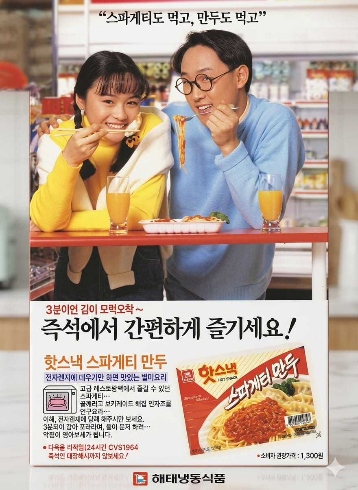

김혜수, 이봉원
스파게티도 먹고, 만두도 먹고
즉석에서 간편하게 즐기세요 !


스파게티도 먹고, 만두도 먹고
즉석에서 간편하게 즐기세요 !
김혜수는 대한민국을 대표하는 배우로, 어린 시절부터 연예계 활동을 시작해 뛰어난 연기력과 세련된 이미지로 큰 사랑을 받아왔다. 1990년대에는 영화와 광고를 넘나들며 당대 최고의 스타로 자리매김했으며, 당당하고 현대적인 매력으로 젊은 세대의 워너비로 평가받았다.
이봉원은 1980~1990년대를 대표하는 코미디언으로, KBS와 SBS의 인기 코미디 프로그램에서 활약하며 대중적인 인기를 얻었다. 특유의 친근한 이미지와 유쾌한 개그 감각으로 많은 사랑을 받았으며, 다양한 광고에도 출연하며 활발한 활동을 이어갔다.
해태 스파게티만두는 만두 속에 스파게티를 넣어 만든 독특한 냉동식품이다. 당시 어린이와 청소년을 겨냥해 출시된 제품으로, 서양 음식인 스파게티와 한국인의 간식인 만두를 결합한 이색적인 아이디어가 특징이었다. 전자레인지나 찜기를 이용해 간편하게 조리할 수 있어 큰 관심을 받았다.
광고는 "스파게티도 먹고, 만두도 먹고"라는 문구를 통해 하나의 제품으로 두 가지 즐거움을 누릴 수 있다는 점을 강조했다. 세련된 이미지의 김혜수와 친근한 이미지의 이봉원을 함께 등장시켜 가족 모두가 즐길 수 있는 간편식이라는 인상을 전달했으며, 독특한 제품 콘셉트로 소비자들의 호기심을 자극했다.
1990년대 식품 광고는 새로운 맛과 재미를 강조하는 경우가 많았다. 기업들은 인기 배우와 코미디언을 모델로 기용해 제품의 친근함을 높였으며, 어린이와 청소년을 겨냥한 독창적인 아이디어 상품들이 잇따라 등장했다. 스파게티만두 역시 이러한 시대 분위기를 반영한 대표적인 퓨전 간식 제품 중 하나였다.